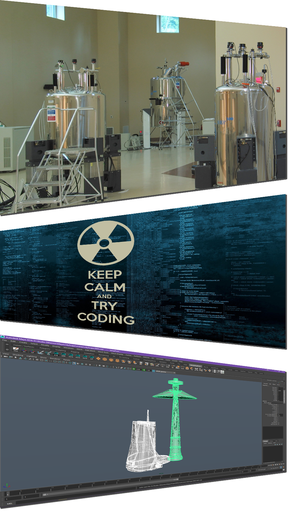

Professional Experience
Technical Writing
- Wrote and revised over 30 Standard Operating Procedures (SOPs) in a three month period
- Worked with Quality Assurance to meet regulatory standards for 10 SOPs
- Developed a web site for synthetic organic chemistry company
Research and Development
- Researched and developed synthetic pathways for 15-20 pharmaceuticals, metabolites and their stable labeled versions annually
- Conducted these syntheses, including purification and structural analysis
- Developed novel, more optimal procedures for existing compounds and intermediates
Education
- B.Sc. Engineering Chemistry - Queen's University. Kingston, Ontario
- M.Sc. course work in Organic Chemistry - McGill University, Montreal Quebec
- CS-142 and CS-124 Computer Science courses - Brigham Young University, Provo, Utah
- Web Programming and Development - Mountainland Applied Technical College, Lehi, Utah
Publications
- Journal of the American Chemical Society, 1997, 119, 10969
Employment
- Research Assistant - Queen's University, Kingston, ON 1997
- Scientist - MDS Pharma Services, St-Laurent, QC 2000-2007
- Web Designer - Synthese Aptochem, Montreal, QC 2007
- Installer - Rocky Mountain Insulation, Provo, UT 2010
- Associate - Express Employment Professionals, Orem, UT 2011
- Patient Snap 2013-present
- Associate - Deseret Industries, Provo, UT 2016
Skills
- Computer Graphics
- Maya
- ZBrush
- V-Ray
- Photoshop
- Programming
- Chemistry
- Organic Synthesis
- Purification - column chromatography, recrystallization, extraction
- Structure Analysis - NMR, Mass Spectroscopy, MS/MS
- Technical Writing